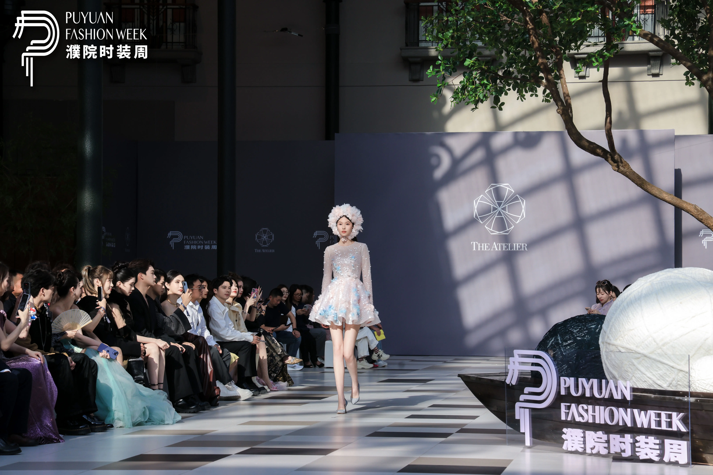
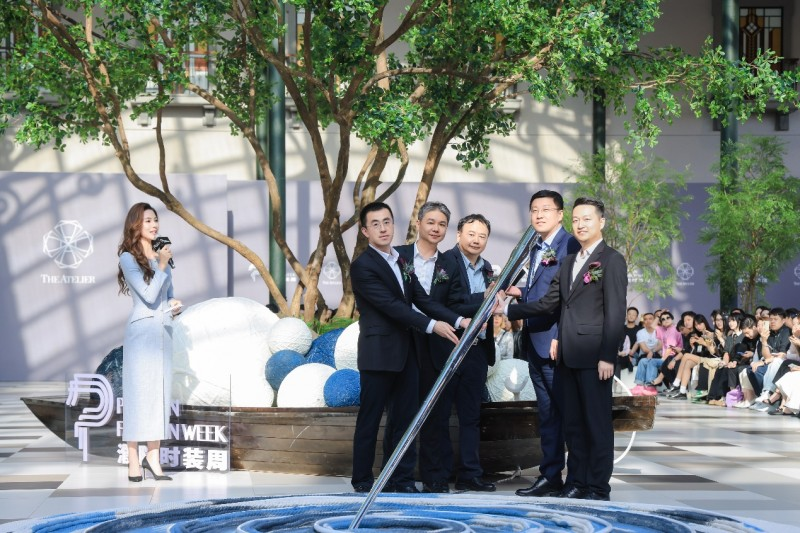
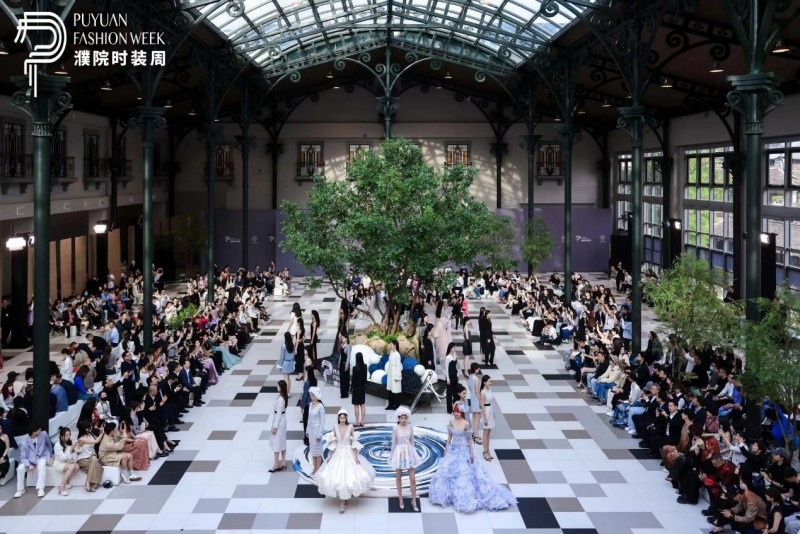

活动介绍
4月24日，2024濮院时装周在濮院时尚古镇拉开帷幕，本届濮院时装周在延续「针织即时尚」核心理念的同时，提出了「织慧未来」的主题，结合时尚针织之美与江南水乡之韵，以濮院本土针织产业基因为引，将传统文化与现代潮流相结合，旨在彰显时尚产业和古镇旅游良性互动的格局，加速濮院时尚产业走向国际，推动本地针织产业中心转型，助力培植年轻设计师力量生长。
亮点
- 重量级设计师作品展示
- 专业时尚大秀和设计师品牌街秀
- 全天候的手工坊、艺术家展览
新闻报道
濮院时装周盛大开幕，时尚界聚焦
2024年4月20日，濮院时装周在万众瞩目中拉开帷幕，来自国内外的时尚界人士齐聚一堂，共同见证这一时尚盛事。
设计师作品惊艳亮相，引领时尚潮流
本次时装周上，多位知名设计师带来了他们的最新作品，这些作品不仅展现了设计师们的创意才华，也引领了未来的时尚潮流。
